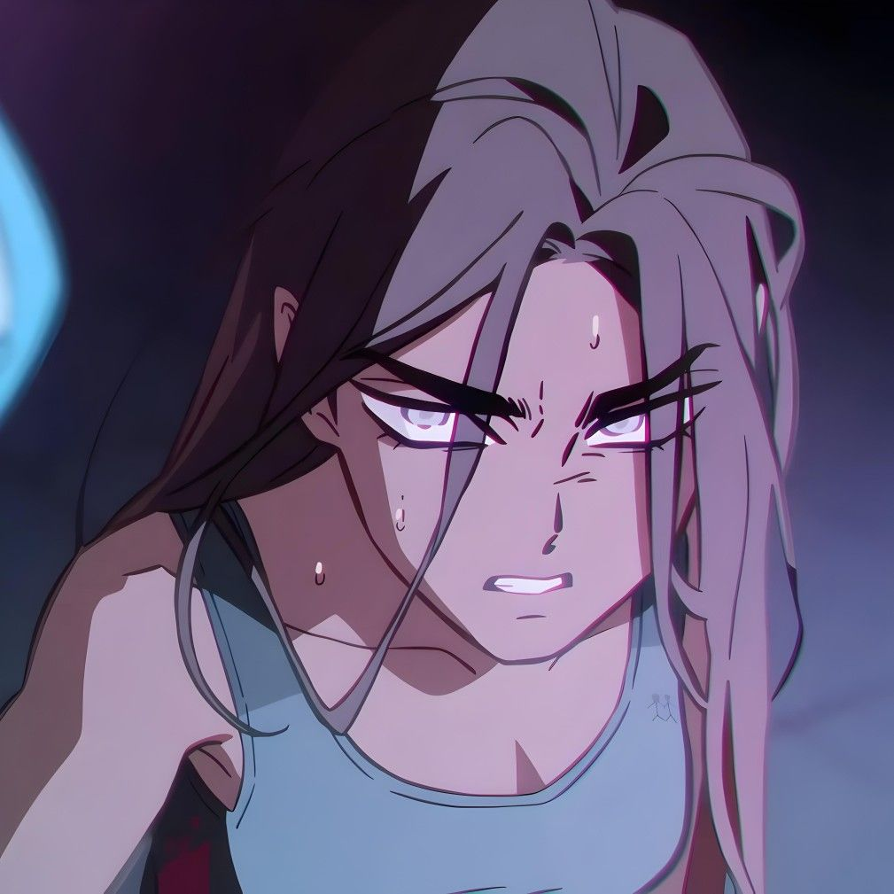

Хёна
Молодая девушка со взрывным характером, одна из лидеров повстанцев и борцов за права людей в мире пришельцев. Она сильна, вынослива и обладает уникальным чувством справедливости.
Хёна выросла в «Саду Анакт» (Anakt Garden) вместе со своим младшим братом Хён ву и их общим другом Лукой. Эта троица была неразлучна, но их идиллия закончилась трагедией. Между Хён ву и Лукой произошел конфликт, причиной которого стало внимание Хёны. Конфликт привел к смерти Хён ву от черепно-мозговой травмы. Эта смерть стала первородной травмой Хёны. Её неспособность защитить младшего брата сформировала глубокое, хроническое чувство вины, которое стало двигателем всех её последующих действий. Вся её дальнейшая борьба — это попытка искупить вину за ту единственную ошибку прошлого.
Психологический портрет: Маска и Реальность Хёна — персонаж с выраженным дуализмом: Внешняя маска (Броня): Она демонстрирует жизнерадостность, уверенность в себе и дерзкую игривость. Даже в смертельно опасных ситуациях, направляя пистолет на враждебных роботов, она сохраняет улыбку. Эта бравада — защитный механизм, позволяющий ей функционировать как лидеру сопротивления и не сломаться под давлением ужаса системы Alien Stage.